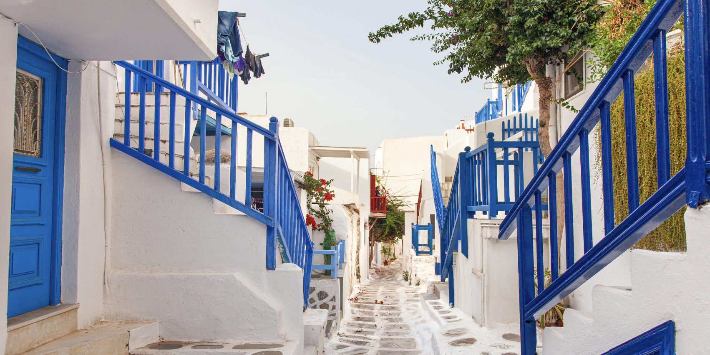
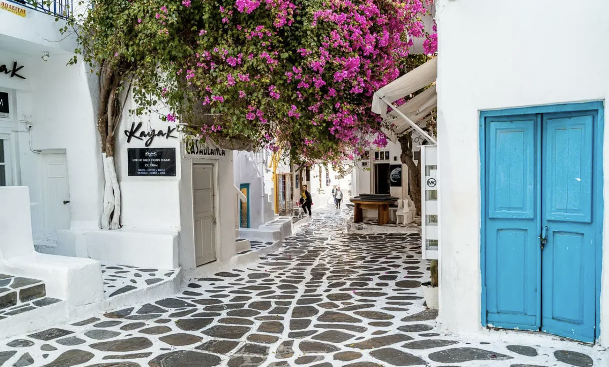

Mykonos the seaside City
 Mykonos has a hot semi-arid climate (Köppen;BSH) because of the low overall rainfall, although it has lots of Mediterranean characteristics and it is highly influenced by the Mediterranean Sea. The sun shines for up to 300 days a year. The rainy season lasts from October until March.[citation needed] Vegetation follows the typical pattern for the region and grows around mid-autumn and ends in the beginning of the summer.[17]
Mykonos has a hot semi-arid climate (Köppen;BSH) because of the low overall rainfall, although it has lots of Mediterranean characteristics and it is highly influenced by the Mediterranean Sea. The sun shines for up to 300 days a year. The rainy season lasts from October until March.[citation needed] Vegetation follows the typical pattern for the region and grows around mid-autumn and ends in the beginning of the summer.[17]
The average daily temperature in the Winter is around 15 °C (59 °F), while it is 27 °C (81 °F) in the summer. The average night temperature is 11 °C (52 °F) in the winter and 23 °C (73 °F) in the summer.
Because of the seasonal cool "meltemi" wind (similar to the other Cyclades islands) and the moderating sea, summer days are relatively cool, dry, sunny and pleasant. The reason for the low overall rainfall is the rain shadow of the Pindus Mountains, which dry out the westerly winds. Winters in general are mild and wet, with many sunny days even in mid-winter. Snow is infrequent and doesn't stay long on the ground when it falls.
Hotels and lodging
The Greek Revolution against the Ottoman Empire broke out in 1821 and Mykonos played an important role, led by the national heroine, Manto Mavrogenous. Mavrogenous, a well-educated aristocrat guided by the ideas of the Enlightenment, sacrificed her family's fortune for the Greek cause. Greece became an independent state in 1830. A statue of her sits in the middle of Manto Mavrogenous square in the main town.
As a result of sailing and merchant activity, the island's economy quickly picked up but declined again during the late 19th century and especially after the opening of the Corinth Canal in 1904 and the First World War at the beginning of the 20th century.
Many Mykonians left the island to find work in mainland Greece and many foreign countries, especially the United States.[12]
Tourism soon came to dominate the local economy, owing a lot to the important excavations carried out by the French School of Archaeology, which began work in Delos in 1873. Mykonos became popular with international "jet set" tourists in the 1960s. In the 70s it was popular spot for Americans to treat as a nude beach, which Americans imagined to be a feature of those natural "far out" Greeks, and then flourished further to become a popular gay tourist destination in the 1980s. By the 2000s, Mykonos had become one of Greece's most expensive islands.
places to visit
Municipal Library – an 18th-century mansion housing over 8,000 volumes and a vast collection of 18th- and 19th-century photographs, documents and Cycladic coins and old seals as well as sketches and books from the personal library of American artist John Ratekin. The Municipal Library is located on Ayia Kyriaki Square in the main town of Chora.[22]
Petros the Pelican – an old celebrity of the town's waterfront, "Petros" has been the official mascot of Mykonos for over 60 years. He took up permanent residence on the island after a storm in 1954 and after his death the islanders elected a successor to carry on his legacy until today.[23]
Mykonos windmills – The windmills are a defining feature of the Mykonian landscape.